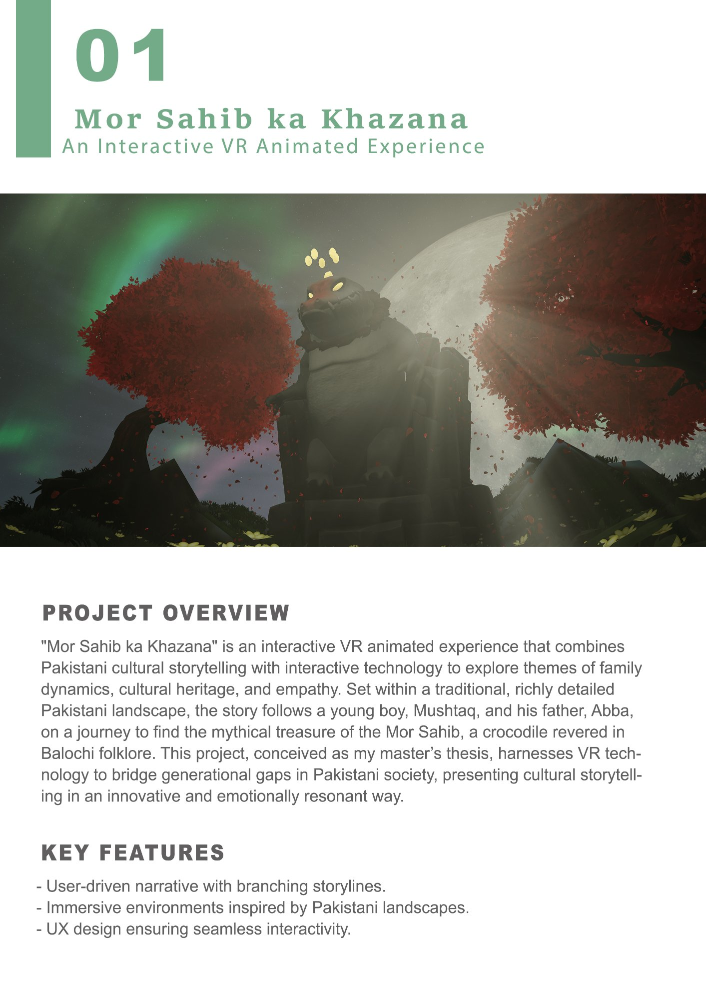
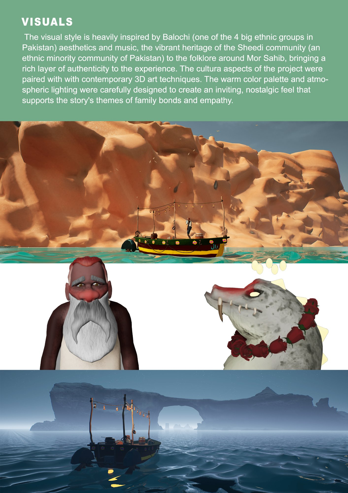
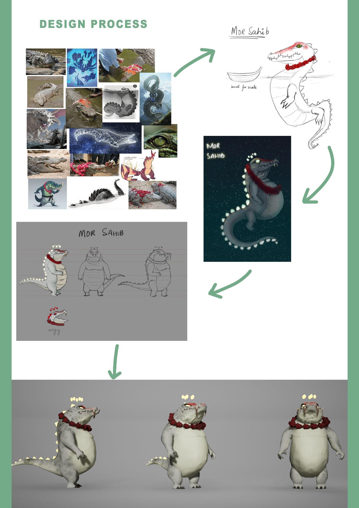
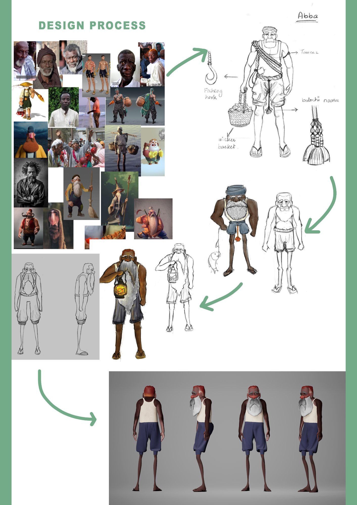
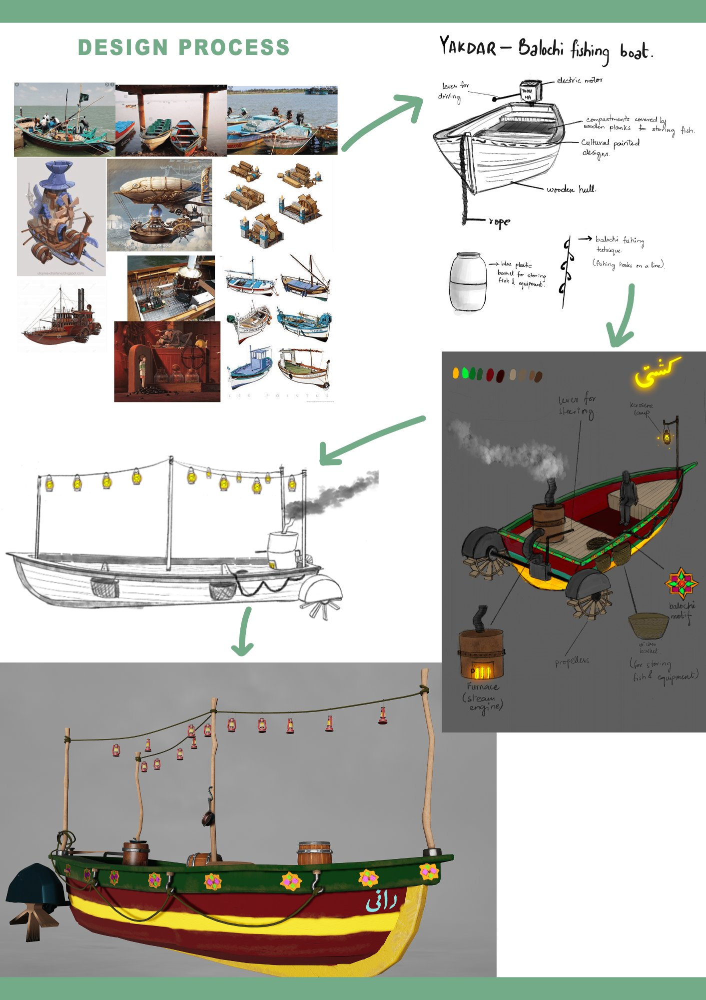
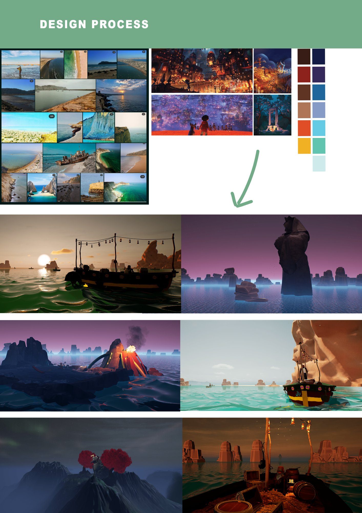
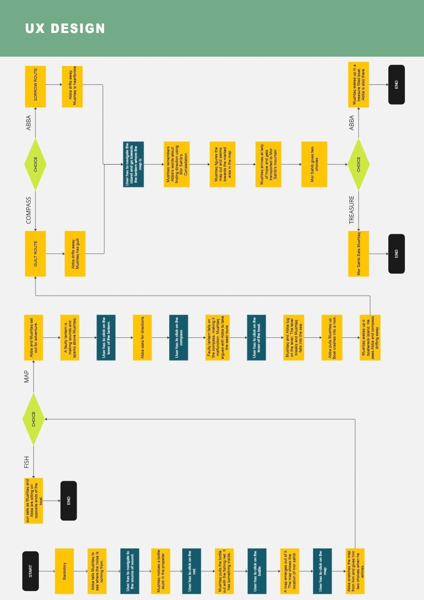
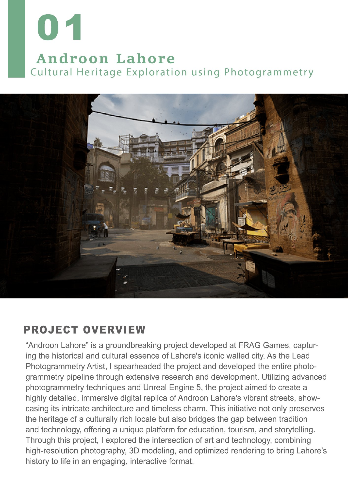
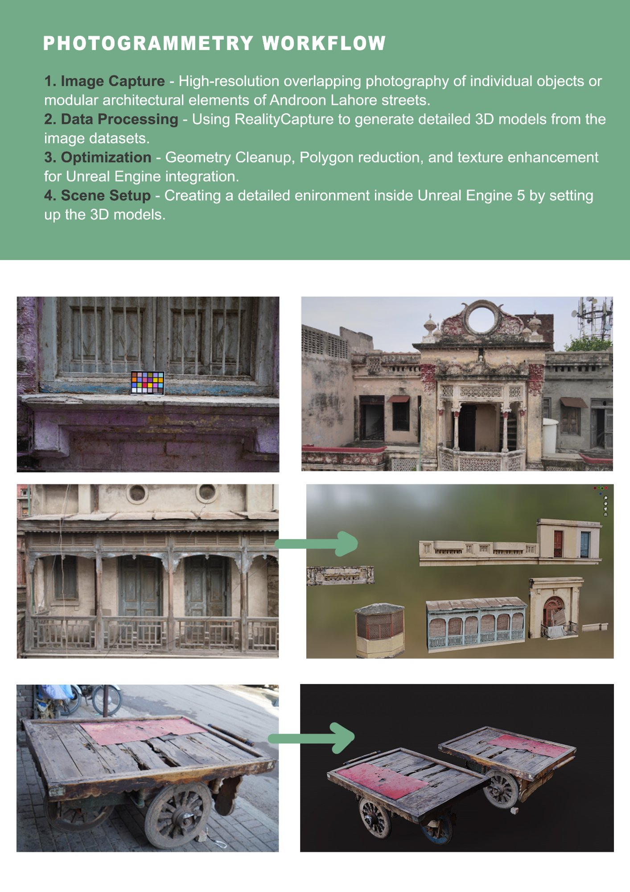

An interactive VR animated experience rooted in Balochi folklore — a father, a son, a mythical crocodile, and a story about what gets passed down.
Mor Sahib ka Khazana is a VR animated experience that I designed, directed, and built as my master's thesis. The story follows Mushtaq, a young boy, and his father Abba — a Balochi fisherman — as they embark on a sea voyage to find the legendary treasure of Mor Sahib, a crocodile revered in Balochi folklore as a protector and spiritual guide.
The project isn't just a game. It's a thesis about using immersive technology to bridge generational gaps in Pakistani culture — and a test of whether VR can create the kind of emotional intimacy that oral storytelling does. The player is Mushtaq. Whatever the father-son relationship becomes is partly shaped by you.
The visual direction draws from Balochi and Sheedi cultural heritage — the warm sandstone coastlines of the Makran coast, the intricate painted patterns of Balochi trucks and boats, and the folklore of Mor Sahib himself. Every environment and prop was researched before it was modelled. The goal was a world that Pakistani audiences would recognise, and international audiences would want to explore.

Final in-engine renders: the Makran coastline environment, character Abba, and Mor Sahib.
Both characters went through a full design pipeline — visual research, reference moodboards, sketch iterations, and 3D modelling — to arrive at designs that feel culturally specific rather than generic. Mor Sahib draws from real mugger crocodiles (Mugger sindicus) revered at dargahs across Pakistan, reimagined here as a benevolent, massive guardian. Abba is a Sheedi fisherman: dark-skinned, elderly, quietly weathered — an intentional counter to the way South Asian characters are typically represented in animation.


Left: Mor Sahib — from reference research to final 3D character. Right: Abba — concept iterations to final model.
The boat "Rani" (meaning queen) is a reimagined Yakdar — a traditional Balochi fishing vessel adapted for a folkloric sea voyage. Research into actual Balochi boat-building and fishing culture informed every detail: the hand-painted hull motifs, the kerosene lanterns strung along the mast, the steam-powered furnace that replaces a modern motor, and the wicker basket for storing equipment. The boat needed to feel functional and fantastical simultaneously.

The Rani: from Balochi fishing boat references through annotated concept sketches to the final coloured 3D model.
The game spans three narrative chapters — each with its own distinct environment: the open Arabian Sea at golden hour, the eerie Boat Wreck Island in a volcanic purple dusk, and Mor Sahib's Mountain, a mythical peak surrounded by red trees under a full moon. All three were colour-scripted against reference moodboards to ensure the emotional tone of each chapter is carried visually as well as narratively.

Mood references and colour palette alongside in-game environment renders across all three chapters.
The experience has a branching narrative structure — players make real choices that shift the relationship between Mushtaq and Abba, and affect which ending they reach. Designing this required mapping every narrative beat, interaction point, and branching outcome into a UX flow before a single scene was built in Unity. The interaction design was constrained by the VR format: only two inputs (interact + teleport) had to carry all player agency.

The full branching UX flow — narrative beats, player interaction points, choice nodes, and multiple endings.

UI design: chapter select screen, VR controller reference overlay, and pause menu.

Visual frames from all three chapters of the experience.